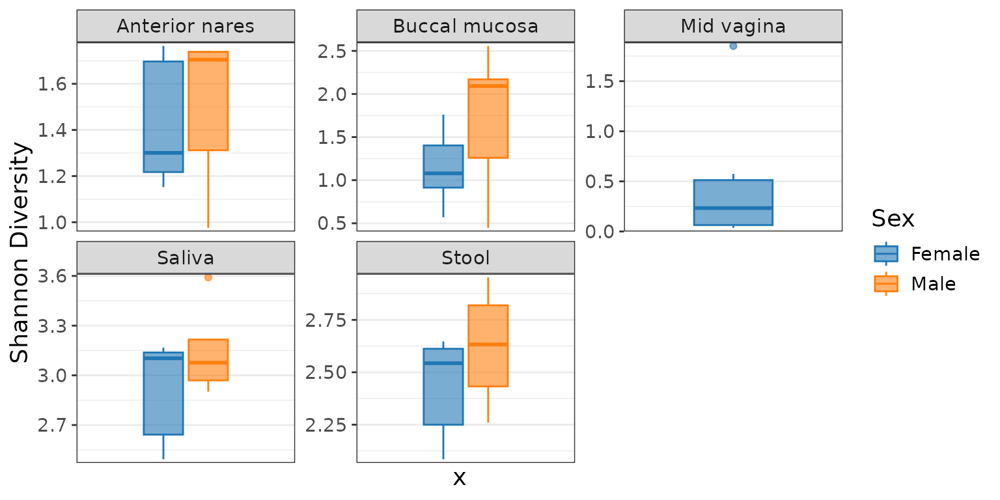
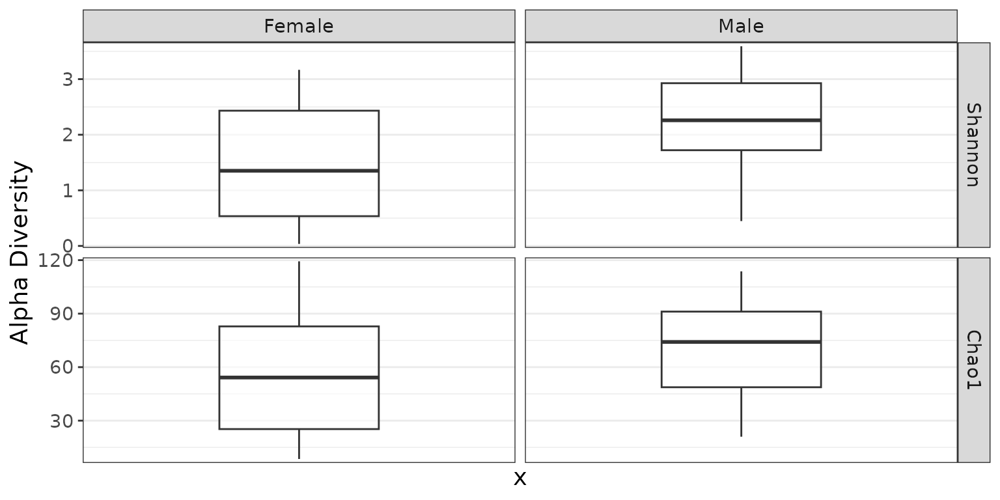

Colors
Automatic colors
All stat.by needs is the name of the metadata field
you’d like to color by. In these cases, rbiom will select an appropriate
color-blind safe palette to use.
stat.by = "Sex"Custom colors
You can map your metadata values to any color you’d like using the
syntax in the following examples. You can use hexadecimal codes or any
of the 657 named R colors (type colors() for the list).
Built-in palettes
A collection of color-blind friendly palettes are pre-defined in rbiom. They have been compiled from multiple sources:
- Crameri, Fabio (2023). Scientific colour maps. website doi
- Frerebeau, Nicolas (2023). khroma: Colour Schemes for Scientific Data Visualization. website doi
- Neuwirth, Erich (2022). ColorBrewer Palettes. website
- Okabe, Masataka, and Ito, Key (2008). Color Universal Design (CUD): How to Make Figures and Presentations That Are Friendly to Colorblind People. website
- Tol, Paul (2021). Colour Schemes. pdf
# Most plots assign colors from a single categorical metadata field.
stat.by = "Body Site", colors = "bright"
# Heatmap plots allow multiple metadata fields of any type.
color.by = c('Body Site' = "okabe", 'Age' = "bamako")Discrete palettes
| bright | ███████ | tableau | ██████████ |
| vibrant | ███████ | classic | ██████████ |
| okabe | ████████ | carto | ████████████ |
| r4 | ████████ | tol | ████████████ |
| light | ████████ | tableau20 | ████████████████████ |
| muted | █████████ | kelly | █████████████████████ |
| fishy | █████████ | alphabet | ██████████████████████████ |
| polychrome | ████████████████████████████████████ | ||
Continuous palettes
| acton | █████████ | devon | █████████ | oslo | █████████ |
| bam | █████████ | grays | █████████ | purples | █████████ |
| bamako | █████████ | greens | █████████ | reds | █████████ |
| batlow | █████████ | hawaii | █████████ | roma | █████████ |
| berlin | █████████ | imola | █████████ | tofino | █████████ |
| bilbao | █████████ | lajolla | █████████ | tokyo | █████████ |
| broc | █████████ | lapaz | █████████ | turku | █████████ |
| buda | █████████ | lisbon | █████████ | vanimo | █████████ |
| cork | █████████ | nuuk | █████████ | vik | █████████ |
| davos | █████████ | oranges | █████████ |
Reversing a palette
Prefix a palette name with a dash (-) to reverse the
color order. This is also helpful for assigning colors to a heatmap’s
main grid.
color.by = c('Age' = "-bamako")
grid = "-imola"Patterns
Options are "brick", "chevron",
"fish", "grid", "herringbone",
"hexagon", "octagon", "rain",
"saw", "shingle", "rshingle",
"stripe", and "wave".
Pattern names can optionally be suffixed with modifiers to change the line width/style, tile size/rotation, and more.

You can allow rbiom to choose a set of patterns, or you can explicitly define the mappings.
stat.by = "Body Site", patterns = TRUE
stat.by = "Sex", patterns = c("brick", "stripe35_lg")
stat.by = "Sex", patterns = c('Male' = "brick20", 'Female' = "shingle")See fillpattern for more complete documentation of pattern options.
Shapes
Shapes can be given as per base R - numbers 0 through 17 for various shapes, or the decimal value of an ascii character, e.g. 65:90 = A-Z; 97:122 = a-z to use letters instead of shapes on the plot. Text strings may used as well.
# One categorical metadata field may be specified.
stat.by = "Body Site"
stat.by = "Sex", shapes = c(7, 8)
stat.by = "Sex", shapes = c('Stool' = 7, 'Saliva' = 8)
Facets
Faceting allows you to split your dataset into multiple sub-plots by one or more categorical metadata fields. For example:
biom <- rarefy(hmp50)
adiv_boxplot(biom, stat.by = "Body Site", facet.by = "Sex")
adiv_boxplot(biom, stat.by = "Sex", facet.by = "Body Site")
Auto-generated facets
Plotting functions often allow you to specify multiple ranks, taxa, metrics, etc which are automatically assigned their own facet dimension. You can still add your own facets to these plots.
adiv_boxplot(biom, bdiv = c("Bray-Curtis", "Euclidean"))
adiv_boxplot(biom, bdiv = c("Bray-Curtis", "Euclidean"), facet.by = "Sex")